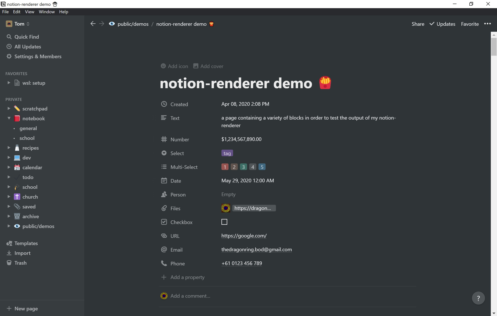
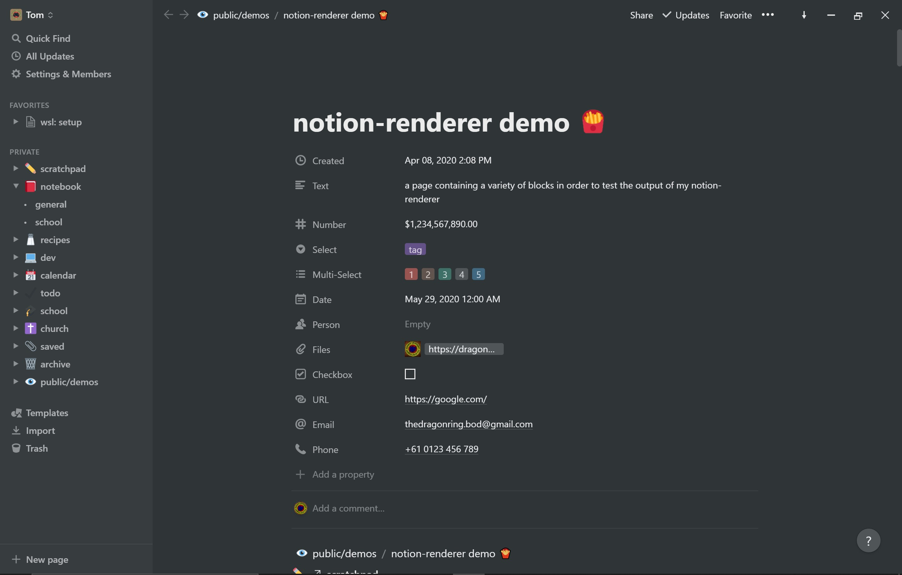
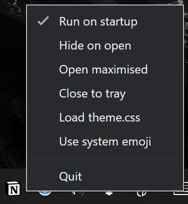

notion enhancer
an enhancer/customiser for the all-in-one productivity workspace notion.so
installation
currently, both windows and linux are supported. it is possible to run this script via the WSL to modify the windows notion app.
want macOS to be supported too? let me know, and I can work with you to get it going.
for linux users, the notion-app (arch linux, others e.g. ubuntu) package will wrap/run the macOS version of the notion app with electron.
(the styles should also work for the web version. these can be installed via an extension like stylus or a built-in feature like userChrome.css.)
- install node.js: windows, linux/WSL.
- install python: windows, linux/WSL.
- reboot.
- in the appropriate terminal/command line, run
npm install -g asar(check installation by runningasar). - download this enhancer & extract to a location it can safely remain (if running the script from the WSL, make sure this is from a location within the windows filesystem).
- ensure no notion processes are running - you may want to check the task manager to make sure.
- optional: to remove previous applications of the notion enhancer, run
cleaner.py. - optional: modify the
resources/user.cssfile to your liking (see styling). - run
customiser.pyto build changes. (for linux run with sudo)
done: run notion and enjoy.
faq
now the notion app won't open :(
- kill any notion tasks in the task manager (
ctrl+shift+esc). - run
cleaner.py. - reboot.
- follow instructions above (ensuring notion isn't running! again, check task manager).
i tried opening the python file but it just closed instantly and nothing happened?
python scripts must be run from the terminal or command prompt via e.g. python customiser.py.
now that I've run the script, can I delete the enhancer folder?
no! user style files resources/user.css and resources/theme.css are fetched from here each time you open notion.
additionally, if you ever need to change or reset your notion build, the customiser.py and cleaner.py files will be useful.
unless you're sure you know what you're doing (if you have to ask, you probably don't) then do not delete anything.
something isn't working, and the suggestions here haven't fixed it...
this is probably a bug. please submit a bug report.
can the enhancer do ___?
experienced problems with the notion app, or just want to add something a bit more to it? please submit a feature request.
features
titlebar
default windows titlebar/frame has been replaced by one more fitting to the theme of the app.
this includes the addition of an extra button, "always on top" symbolised with an arrow (4th from the right). when toggled to point up, notion will remain the top visible window even if not focused.
to customise which characters are used for these buttons, open in the resources/preload.js file,
find the relevant button icon (lines 80 - 111) and replace it with your chosen unicode character (e.g.
replacing return '⨉'; with return '🙄';).
nicer scrollbars
i mean, yeah. get rid of those ugly default scrollbars and use nice inconspicuous ones that actually look as if they're part of notion.
to add these to the web version, copy lines 44 - 75 from user.css into your css customiser.
 image: before enhancement
 image: after default enhancement
hotkeys
- reload window: in addition to the built-in
CmdOrCtrl+Rreload, you can now reload a window withF5. - toggle all notion windows to/from the tray:
CmdOrCtrl+Shift+Aby default.
to set your own toggle hotkey, open customiser.py and change line 19 (hotkey = 'CmdOrCtrl+Shift+A')
to your preference. you will need to run or re-run customiser.py afterwards.
tray
single-click to toggle app visibility. right click to open menu.
- run on startup: run notion on boot/startup. (default: true)
- hide on open: hide the launch of notion to the tray. (default: false)
- open maximised: maximize the app on open. (default: false)
- close to tray: close window to tray rather than closing outright
on click of
⨉. does not apply if multiple notion windows are open. (default: false) - load theme.css: loads the custom colour theme file. see colour theming for more information. (default: false)
 image: open application tray
styling
custom appearances can be applied to the app via the resources/user.css and resources/theme.css files. for more information,
and a list of various optional styling changes, see the page on styling.
other details
credit where credit is due, this was originally made by Uzver (github: @TarasokUA, telegram: UserFromUkraine, discord: Uzver#8760). he has approved my go-ahead with this fork, as he himself no longer wishes to continue development on the project.
the notion logo belongs entirely to the notion team, and was sourced from their media kit.
if you have any questions, check my website for contact details.